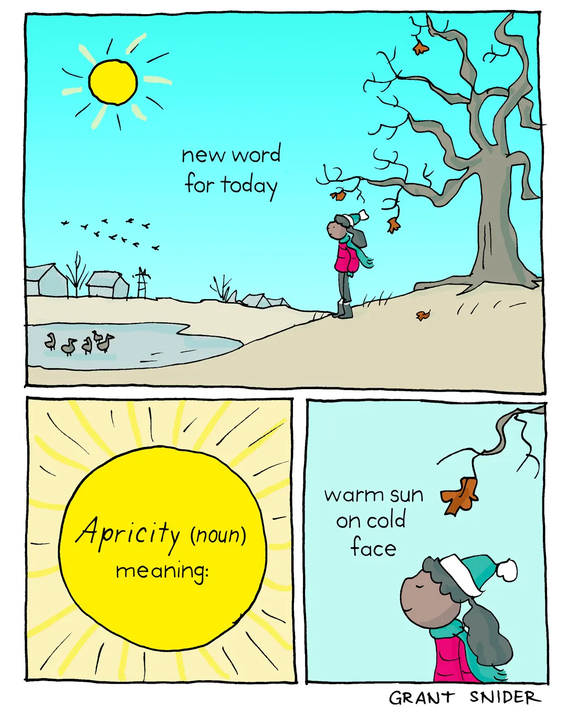

Happy Sunday! Thank you for supporting the Daily Bulletin project.
- Suggest improvements to the Daily Bulletin project.
- Unsubscribe if you no longer wish to receive emails from the Daily Bulletin project.
Wellbeing Inspirations
Want to contribute to a future Daily Bulletin? Share your inspirations to give everyone some morning wellbeing energy!
Cartoon of the Day

Created by Grant Snider.
Delicious Dinings
| Day | Meal | Options |
|---|---|---|
| Sun | Brunch | Hot Breakfast |
| Dinner | Cottage pie | |
| Glamorgan sausages | ||
| Mon | Breakfast | Pancake / Waffle Bar 🌱 |
| Lunch | Sweet & Sour Crispy Quorn 🌱 | |
| Mixed Greens 🌱 | ||
| Dinner | Roast Chicken Leg w/ Honey & Mustard | |
| Vegan Shakshouka 🌱 |
The catering team would like to remind everyone to wash their hands before coming to the dining hall, and to refrain from eating in the servery area. Thank you!
Retrieved from Shared Weekly Menu. For reference only; accuracy not guaranteed.
Important Events
| Day | Time | Event | Location |
|---|---|---|---|
| Sun | 12:15–16:00 | CeltiCon | Campus |
Retrieved from What's On This Week.
Today in History
- 655 – Penda of Mercia and Æthelhere of East Anglia were defeated by Oswiu of Northumbria at the Battle of the Winwaed in Yorkshire, England.
- 1859 – Sponsored by Greek businessman Evangelos Zappas, the first modern revival of the Olympic Games took place in Athens.
- 1908 – After numerous atrocities in the territory, the Congo Free State was annexed to Belgium to form the Belgian Congo.
- 1943 – The Holocaust: In the Romani Holocaust, Nazi official Heinrich Himmler ordered that the Romani were to be put "on the same level as Jews and placed in concentration camps".
- 1988 – The Soviet spacecraft Buran , a reusable vehicle built in response to NASA's Space Shuttle program, was launched, uncrewed, on its only flight.
Retrieved from Wikipedia.